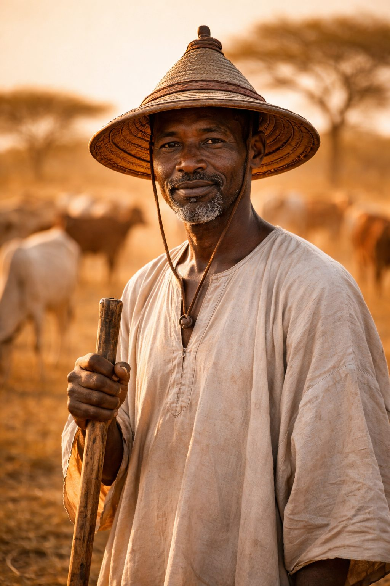

Née dans la diaspora. Construite au Mali.
Tout le monde disait que numériser le commerce du bétail en Afrique de l'Ouest était impossible. Les marchés sont trop informels. Les éleveurs n'utilisent pas d'applis. La confiance, ça ne se numérise pas.
Ils avaient tort.
Bâtir, pour le commerce du bétail en Afrique de l'Ouest et au Sahel, la confiance qui n'a jamais existé.
Sous séquestre, jusqu'à ce que vous saisissiez votre code.
Pas un bouton « Acheter ».
Du marché au téléphone, et retour.
Le bétail est l'épine dorsale de l'économie et de la culture ouest-africaines. Des millions de familles en dépendent pour leur subsistance, et des millions d'autres en ont besoin pour les grands moments — la Tabaski, les mariages, les baptêmes — comme pour les repas de tous les jours. Pourtant, chaque transaction a toujours exigé un acte de foi.
Garabaly apporte au commerce du bétail en Afrique de l'Ouest et au Sahel la confiance qui lui a toujours manqué : une place de marché où chaque paiement effectué dans l'appli est protégé par séquestre, où l'on négocie comme on se parle, et où la réputation de chaque commerçant le suit du marché au téléphone, et retour.
Le commerce traditionnel
Avec Garabaly
Dans le commerce du bétail en Afrique de l'Ouest, les acheteurs doivent souvent voyager sur de longues distances pour inspecter les animaux. Les transactions en espèces ne protègent pas contre la fraude. Les intermédiaires ajoutent des coûts sans ajouter de valeur. Et il n'y a aucun moyen fiable de vérifier la santé d'un animal avant l'achat.
Pendant ce temps, la diaspora — des millions d'Ouest-Africains vivant à l'étranger — n'a aucun moyen d'acheter du bétail pour sa famille restée au pays lors des célébrations. Ces failles coûtent aux éleveurs leurs moyens de subsistance et aux acheteurs leur argent durement gagné. Garabaly existe pour changer cela.
Chaque transaction est une relation. Nous n'avons pas court-circuité la négociation : nous l'avons numérisée.

des mouvements de bétail recensés franchissent au moins une frontière avant d'atteindre l'acheteur. Ce ne sont pas des clics — ce sont des relations sur des milliers de kilomètres. (PLOS ONE / CILSS, 2020)
Chaque transaction en Afrique de l'Ouest est une relation. Vous saluez. Vous demandez des nouvelles de la famille. Vous inspectez. Vous proposez. Le vendeur fait une contre-offre. Vous tombez d'accord. Ce n'est pas une perte de temps : c'est la culture.
Garabaly ne court-circuite pas la négociation : elle la numérise. On ne numérise pas un marché sans respecter la façon dont il fonctionne vraiment. La confiance ne se construit pas avec un bouton « Acheter ».
En Afrique de l'Ouest, environ deux tiers du bétail traverse au moins une frontière avant d'atteindre son acheteur final. Ce n'est pas du commerce en ligne : ce sont des relations sur des milliers de kilomètres. Nous avons bâti Garabaly pour cette réalité.
J'ai grandi dans les villages, vécu avec les éleveurs — et connu la peur du retour, l'argent en poche.
J'ai été boucher quand j'étais élève : le poids du couteau, la Tabaski du lever au coucher.
On m'envoyait chercher le bon animal au bon prix — l'attente au soleil, le retour à vide.
Aujourd'hui au loin : envoyer un mouton sans être là, appeler trois fois « c'est fait ? »
« Garabaly n'est pas née dans un bureau. Elle est née de tout ça. »
J'ai grandi dans le Mali rural. Pas à Bamako — dans les villages. Kenenkoun. Bouramabougou. Chaque semaine, j'accompagnais les familles au marché hebdomadaire. J'ai vécu avec des éleveurs. J'ai aidé à entretenir leurs troupeaux. J'ai vu ce que ça coûte de marcher des jours pour rejoindre une foire — et je connais la peur du retour, quand vous avez vendu et que tout votre argent est dans votre poche, sur une route où tout le monde le sait.
Quand j'étais élève, j'ai travaillé comme boucher pour gagner ma vie. Je connais le poids d'un couteau, la précision du geste, la différence entre une découpe propre et une découpe bâclée. Je sais que pendant la Tabaski, un boucher travaille du lever au coucher du soleil et que chaque famille compte sur lui. Et je sais aussi que le reste de l'année, ce même boucher attend — parce qu'il n'y a aucun moyen de se faire connaître au-delà de son quartier.
On m'envoyait aussi chercher du bétail — des trajets longs, à travers plusieurs marchés, pour trouver le bon animal au bon prix. J'ai connu l'attente sous le soleil, les marchés où il n'y a rien de bon, le retour à vide, et le soulagement quand enfin vous trouvez et que le prix tient.
Aujourd'hui, je vis dans la diaspora. Et comme des millions d'autres, quand la Tabaski arrive, quand il y a un baptême, un mariage, des funérailles — je veux envoyer un mouton à ma famille. De loin. Sans être là. En appelant trois fois pour demander : « C'est fait ? Il était bien ? »
J'ai été éleveur. J'ai été boucher. J'ai été acheteur. Je suis diaspora. Garabaly n'est pas née dans un bureau. Elle est née de tout ça.
En mars 2026, j'ai créé Garabaly à Bamako et l'ai immatriculée au Registre du commerce et du crédit mobilier (RCCM) du Mali. Grâce à cette immatriculation, nous avons intégré le mobile money et construit les fondations d'une entreprise réelle, dans les règles.
Mon engagement est simple : chaque fonctionnalité de Garabaly est testée par de vrais vendeurs dans de vrais marchés. Chaque paiement effectué dans l'appli est protégé par le séquestre. Et chaque décision est prise par quelqu'un qui a vécu des quatre côtés du marché. Construite ici, pour ici.
Chaque fonctionnalité part d'une question : est-ce que cela rend la transaction plus fiable ?
Interface complète en français, en anglais et en arabe (de droite à gauche pour l'arabe) — et des avis vocaux dans la langue de votre choix.
Le séquestre garde votre argent jusqu'à votre code de confirmation — rien avant.
Pensé pour le smartphone : léger en données et facile à prendre en main.
Nous encourageons la certification sanitaire avant la vente — et l'acheteur peut réserver un vétérinaire indépendant et vérifié.
Un portefeuille complet — dépôts, transferts, mobile money — qui fait entrer les commerçants dans l'économie numérique.
Et aussi depuis Londres, New York, Bruxelles, Montréal…
Des millions d'Ouest-Africains vivent à l'étranger, à Paris, Londres, New York, Washington, Bruxelles et Montréal. Ils veulent envoyer du bétail chez eux pour la Tabaski, les mariages, les baptêmes, les funérailles, ou simplement pour prendre soin de leur famille.
Garabaly rend cela possible — parcourez le bétail de vendeurs vérifiés depuis n'importe où dans le monde, négociez avec les vendeurs locaux, payez dans votre devise (EUR, USD, GBP et plus de 135 autres, via Stripe), sous séquestre, et faites-le livrer, si vous le souhaitez, par un transporteur indépendant et vérifié, jusque dans la concession familiale. Le suivi en temps réel vous permet de savoir exactement quand la joie arrive.
Derrière une interface simple, une infrastructure pensée pour la sécurité, la vitesse et la montée en charge.
Chaque paiement dans l'appli protégé, chaque franc tracé, rien n'est versé sans votre code.
Messages écrits et vocaux, envoyés dès que le réseau revient — même avec une connexion faible.
Notifications et alertes dans l'appli, avec un lien direct vers vos commandes et votre portefeuille.
Vérification d'appareil, code de confirmation chiffré, surveillance de sécurité.
des internautes mobiles d'Afrique subsaharienne se connectent encore depuis un smartphone 3G ou un téléphone basique (GSMA, 2026). Voilà pourquoi l'appli Garabaly est légère, même sur un smartphone d'entrée de gamme : peu de données, des messages envoyés dès que le réseau revient, et la voix plutôt que le clavier.
Aucun éleveur ne vend dans la peur.
Aucun acheteur ne paie à l'aveugle.
Aucune famille n'attend sans preuve.
de bétail échangé chaque année en Afrique de l'Ouest (OCDE, 2020), un commerce qui fait vivre quelque 20 millions de pasteurs (ONU/FAO, 2026). L'infrastructure qui les relie n'a jamais existé. Nous la construisons.
Votre bétail. Votre argent. Votre confiance.
Nous voyons un continent où aucun éleveur ne vend dans la peur, aucun acheteur ne paie à l'aveugle, et aucune famille n'attend sans preuve.
Le commerce du bétail en Afrique de l'Ouest dépasse 1 milliard de dollars par an (OCDE, 2020). Du Sahel à la côte, l'élevage fait vivre des millions de familles, rythme leurs fêtes et soutient leur sécurité alimentaire. Quelque 20 millions de pasteurs y pratiquent la transhumance (ONU/FAO, 2026). Pourtant, l'infrastructure reliant éleveurs et acheteurs, offre rurale et demande urbaine, capitaux de la diaspora et marchés locaux n'a jamais existé. Nous avons commencé au Mali et nous nous étendons à travers la région parce que le besoin est évident et que la demande est déjà là.
Nous ne remplaçons pas le fonctionnement du commerce. Nous le rendons digne de confiance.
Acheteurs, vendeurs, prestataires, diaspora — le commerce du bétail entre dans une nouvelle ère.